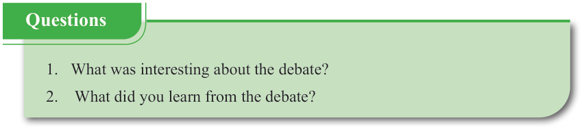

English for Secondary Schools Student’s Book Form One, printed page 45
 "Do you know?" heading with a large question mark.
"Do you know?" heading with a large question mark.
A debate is a discussion whereby individuals express their arguments by focusing on a specific topic or idea. Usually, in a school context, a debate involves two sides or teams: one supporting a proposition (the affirmative team), and one opposing a proposition (the opposing team). However, there should be a debate leadership to ensure the quality of evidence, argument and the performance of the debate, hence making a judgement. The leaders of a debate include a chairperson, a secretary and a timekeeper. Sometimes, in the school context, the judgement may be done by a teacher. The winner is the one who gets the highest points. The floor (audience) may be involved in the debate, but they will not be directly engaged in the discussion.
(d) Conduct a debate on the motion “A single-party system is better than a multi-party system.”

Questions
1. What was interesting about the debate?
2. What did you learn from the debate?
1. What was interesting about the debate? 2. What did you learn from the debate?
Task
Organise yourselves into a debating team, choose one topic from the given box and debate. Then, write down the vocabulary you have developed with their meanings and use five of them to make sentences (one for each).